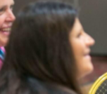

- - - Requisitos de uso - - -
Android Kernell 11.6 o superior| Imagen | Nombre | Ocupación |
|---|---|---|
| Joseline Caperskary Vaoiler | Orgullosa presidente de ToySerious, controla a la perfección todo lo relacionado con la empresa | |
| Margarete Rosie Canpeskyt | Secretaria leal y honrada que ayuda a la presidente de ToySerious a manejar la empresa, entre otros | |
|  | Magnarette Glaurainence | CEO de Marketting y estrategia comercial de ToySerious |
| Buanedict Casamiento Hermoso | CEO de Economía y contabilidad de ToySerious | |
| Candance Melinares Mazapanies | Abogada de muy alto rango defensora de las acciones tomadas por ToySerious |